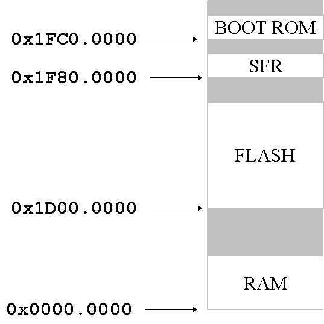
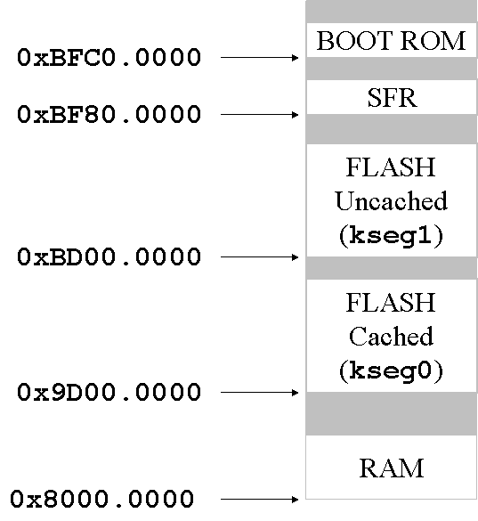

With a MIPS CPU the addresses you put in your programs are never the same as the physical addresses that come out of the chip (sometimes they are simply related, but they're not not same). We can refer to them as program addresses [note] and physical addresses, respectively.
A MIPS CPU runs at one of two privilege levels: user and kernel. We may talk about user mode and kernel mode, but changing from one mode to the other never makes anything work differently; it just sometimes makes it illegal. In user mode, any program address with the most significant bit of the address set is illegal and causes a trap. Also, some instructions cause a trap in user mode.
Inte the MIPS memory map, shown below, the program address space is divided into four big areas with traditional (and thoroughly meaningless) names. Different things happen according to the area in which an address lies.
|
|
The MIPS core at the heart of the PIC32 has a number of advanced features designed to allow the separation of memory space dedicated to an application or applications from that of an operating system via the use of a memory management unit (MMU) and two distinct modes of operation: user and kernel. Since the PIC32MX family of devices is clearly targeting embedded-control applications that most likely would not require much of that complexity, the PIC32 designers replaced the MMU with a simpler fixed mapping translation (FMT) unit and a bus matrix (BMX) control mechanism.
The FMT allows the PIC32 to conform to the programming model used by all other MIPS-based designs so that standardized address spaces are used. This fixed but compatible scheme simplifies the design of tools and applications and the porting of code to the PIC32 while considerabley reducing the size and therefore the cost of the device.
The PIC32 physical addressing space includes four separate elements: RAM, Flash, Special Function Registers (SFR), and Boot ROM. These are physically assigned addresses as follows:

The FMT translates between physical addresses and virtual (or program) addresses. Currently the PIC32 (in the absence of an operating system) runs entirely in kernel mode. The virtual memory locations for the PIC32 processor are shown below:

A final note is required to clarify the reason for two virtual addresses being dedicated to the same Flash memory. Both point to the same physical memory space. The difference is only in the way the cache is applied. If a program accesses memory in kseg1, the cache is automatically disabled. Vice versa, if memory accesses through kseg0 are routed through the cache mechanism.
Similarly, although not shown in the figure above, internal RAM is also mapped twice, once to 0x8000.0000 (kseg0) and once to 0xA000.0000 (kseg1).
Lucio Di Jasio,
Programming 32-bit Microcontrollers in C, Exploring
the PIC32,
Newnes (Elsevier), 2008.
ISBN 978-0-7506-8709-5.
p. 130-135
The Kernel Program Flash address space starts at physical address 0x1D000000, whereas the user program flash space starts at physical address 0xBD000000 + BMXPUPBA register value.
Similarly, the internal RAM is also divided into Kernel and User partitions. The kernal RAM space starts at physical address 0x00000000, whereas the User RAM space starts at physical address 0xBF000000 + BMXDUDBA register value.
By default the entire Flash memory and RAM are mapped to the Kernel mode application only.
BMXPFMSZ is the bus matrix register that holds the total size of Program Flash Memory. BMXDRMSZ is the Data RAM Memory (DRM) size in bits. BMXBOOTSZ is the Boot Flash Memory (BFM) size in bits. The value 0x3000 is 12 KB (which di Jasio suggests) but we read 0x2000 (8 KB).
PIC32MX Family Data Sheet, Microchip Technology, 2008.
This example program prints the values of the bus matrix registers mentioned above.
01: #include <p32xxxx.h>
02: #include "db_utils.h"
03:
04:
05: int main()
06: {
07: printf("BMXPUPBA 0x%x\n",BMXPUPBA);
08: printf("BMXDKPBA 0x%x\n",BMXDKPBA);
09: printf("BMXDUPBA 0x%x\n",BMXDUPBA);
10: printf("RAM memory size BMXDRMSZ 0x%x (%d KB)\n ",BMXDRMSZ, (BMXDRMSZ>>10));
11: printf("FLASH memory size BMXPFMSZ 0x%x (%d KB)\n",BMXPFMSZ,(BMXPFMSZ>>10));
12: printf("BOOT memory size BMXBOOTSZ 0x%x (%d KB)\n",BMXBOOTSZ,(BMXBOOTSZ>>10));
13: DBPUTS("Program terminated. Click HALT and then RESET to stop the microcontroller. \n");
14: return 0;
15: }
Running the program on the PIC32 Starter kit gave the following output:
BMXPUPBA 0x0 BMXDKPBA 0x0 BMXDUPBA 0x0 RAM memory size BMXDRMSZ 0x8000 (32 KB) FLASH memory size BMXPFMSZ 0x80000 (512 KB) BOOT memory size BMXBOOTSZ 0x2000 (8 KB)
Maintained by John Loomis, last updated 28 July 2008